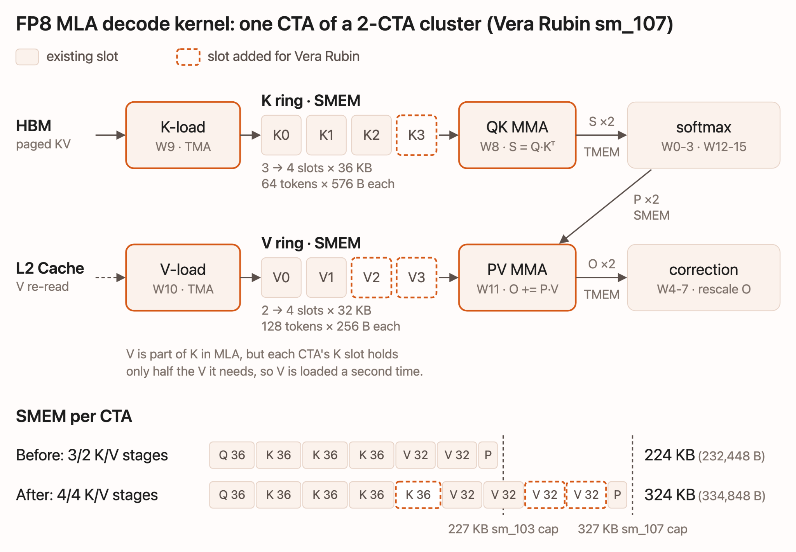
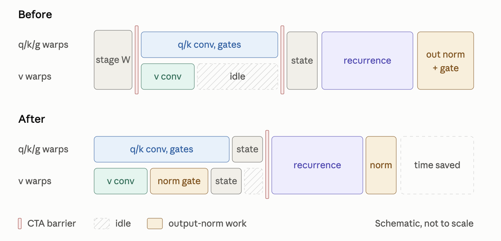
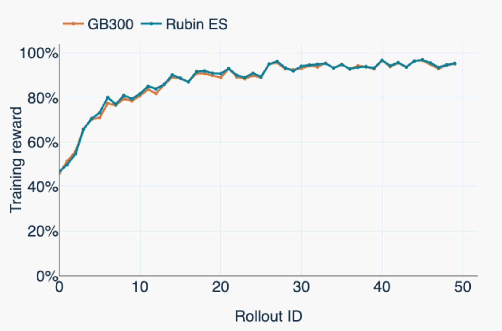

LMSYS拿到两台NVIDIA Vera Rubin（8卡）尝鲜，把SGLang和Miles端了上去：SGLang跑推理，Miles跑RL训练。推理侧为Kimi K3 NVFP4逐个调kernel，训练侧开箱即用，连agentic RL的沙盒都放在Vera CPU上跑。
Vera Rubin是Blackwell Ultra（GB300）之后的一代。对kernel最有影响的变化：每CTA共享内存327 KiB（Hopper/Blackwell是227 KiB），SM数量212个，NVLink 6。一部分工作是把Blackwell时代的kernel按新上限重调，另一部分是profiling Kimi K3时抓到的开销：kernel launch、barrier停顿、隐藏拷贝。
Cognition已经在Vera Rubin NVL72上部署了自家SGLang栈，报total token吞吐相对GB200 NVL72高4.8倍。
长上下文下MLA decode大部分时间在等HBM读KV，掩盖延迟的办法是让更多读在路上。Blackwell上FP8 kernel已经把227 KiB共享内存塞了3个K stage加2个V stage。Vera Rubin放宽到327 KiB，正好多塞一个K stage和两个V stage。流水线加深后，batch 16、128k上下文快16%，输出逐比特一致。
低并发时一个请求的KV分给很多CTA，第二kernel再合并。合并时原来一次读一个split的部分结果，读一次等一次，每个split付一次L2延迟。改成先把所有读发出、再从寄存器累加，batch 1、128k上下文的完整FP8 MLA快20%。
batch 1的decode给attention kernel的并行活太少，默认32 split时212个SM大半闲着。按K3的形状翻倍到64 split，多些SM有活干，端到端1.9%。还有个小细节：MLA的KV/Q准备里转FP8时没开饱和，编译器没用上packed硬件转换指令，走了慢速软件路径。改成饱和转换（溢出钳到 ±448而不是变NaN），准备kernel快2.5倍。

每层MoE结尾都一样：收尾专家输出、加共享专家、8卡all-reduce、RMSNorm。每个kernel都小，launch开销占大头，K3的92层MoE层层都付。把收尾推迟，四步折进一个集合kernel，每decode步省276次launch，端到端5.9%。
融合尾部小批量用push式all-reduce，大批量用pull式。Vera Rubin上push快到256行，把切换点挪过去，32并发decode吞吐涨3.6%。MoE latent上投影的all-gather GEMM，profiling发现时间花在producer的标量FMA和warp shuffle上，搬到mma.m16n8k16张量核指令（4到8行），decode步时间再降1.1%。
KDA的融合verify kernel大量时间耗在barrier上空等。原来每个CTA把卷积权重拷进共享内存再在块级barrier等。现在每个warp把权重放自己寄存器里，warp内交接不需要CTA barrier。v warp提前算完，就用空闲时间算输出归一化的门。输出逐比特不变，生产版verify kernel快20%。
每层KDA的门控RMSNorm从融合QKVG投影的列切片取门，切片不连续，PyTorch每次调用前静默拷一份：2.6微秒乘以每步69次。教会norm kernel按stride读门，拷贝消失，decode步时间降1.8%。

Miles用SGLang做rollout、Megatron做训练，单个容器镜像在Vera Rubin上端到端跑RL。Qwen3-30B-A3B在GSM8K上（每rollout 256 prompt×8采样，最多1024回复token）：50个rollout后奖励从约45% 涨到95%，曲线和GB300完全贴合。DeepSeek-V4-Flash（4层FP8）在GSM8K上FP8路径rollout加训练全通。
Agentic RL直接在Vera CPU上起沙盒：单tray跑NeMo Gym的mini-SWE-agent环境，每episode一个沙盒放在托盘Vera CPU上，64个沙盒并发，GPU侧serve并训练Qwen3.5-35B-A3B。选SWE-bench Verified是因为它自带arm64任务镜像，grading验证过。每步8任务×8尝试，最多64K token每episode。奖励稳定在0.6附近，episode平均缩短30%，rollout与训练KL紧贴。等Vera CPU服务器大规模到位，agentic训练可以开更多并发环境。

参考：https://www.lmsys.org/blog/2026-10-09-vera-rubin